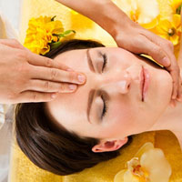
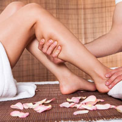
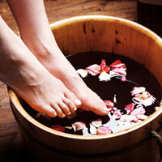
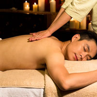
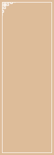
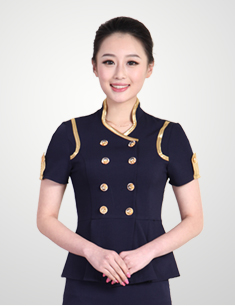

理疗知识
更多 >

头疼---外感头疼怕风、怕冷，有汗或无汗还有发烧等症状。内伤头疼症状时有时无，常发生于过度疲劳。头疼症状原则以疏通经络，调和气血为主，足部保健加强部位消除脑部优...

全足保健，应先从左脚开始，保健3遍肾、输尿管、膀胱三个反射区，再按脚底、脚内侧、脚外侧、脚背在保健时，关键点是要找准敏感点，这样不需要用多 大力量...

足浴疗法属足疗诸法中的一种，也同属中医外治法在中医文化中，足浴疗法源远流长，它源于我国远古时代，是人们在长期的社会实践中的知识积累和经验总结，至今已有3000多年的历史...

根据往年春节长假的情况来看，度假高峰期过后的一段时间内，睡眠紊乱、心理失调、上班恐惧、开学恐惧等“节后综合征”的患者会占到各科门诊量的近三成。专家表示，人们从平时心理...
技师风采
更多 >

明星技师
